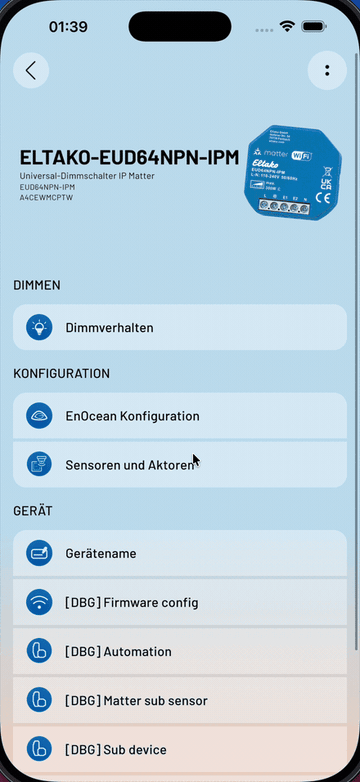
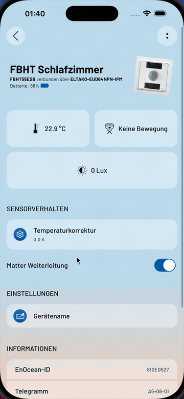

Zwei Bugs und zwei Features, die du bei jedem Request selbst bauen musst — und was TanStack Query daraus macht.
Fast jedes Team baut sich das zweite selbst — versehentlich, in kleinen Schritten, ohne es zu merken.
Die Beispiele sind in React. Das Problem ist es nicht. Der Weg von "ich mache das von Hand" zu "ich nutze eine Library" sieht überall gleich aus — den Beweis liefert am Ende unsere eigene App.
useState = ein Wert, der den erneuten Lauf überlebt.useEffect(fn, [x]) = fn läuft nach dem Rendern, und erneut, sobald x sich ändert. Das return darin räumt vorher auf.Das war's. Wenn ihr gleich Code seht, den ihr nicht entziffern könnt: nicht hängenbleiben. Achtet nur darauf, wie er wächst.
function List({ category }) {
const [data, setData] = useState(null) // überlebt
useEffect(() => {
// läuft nach dem Rendern: hier passiert der Request
return () => {
// läuft vor dem nächsten Lauf: aufräumen
}
}, [category]) // läuft erneut, wenn sich das ändert
return (
<div>
<h1>Hello World</h1>
{/* ... */}
</div>
)
}
Der teure Denkfehler: Server State in dieselbe Schublade zu legen wie Client State — also einfach in eine Variable zu kippen und fertig. Genau das machen wir jetzt, und schauen zu, was passiert.
Eine Liste von Bookmarks, gefiltert nach Kategorie. Läuft. Geht in Review durch.
Neun Zeilen davon existieren nur, weil die Daten von einem Server kommen. Genau die zählen wir ab jetzt oben rechts mit.
Frage an euch: Der Nutzer klickt auf Kategorie A, wartet nicht ab und klickt auf B. Was steht danach auf dem Schirm?
Was jetzt kommt, sind zwei verschiedene Dinge — und der Unterschied ist wichtig:
function Bookmarks({ category }) {
const [data, setData] = useState([])
const [error, setError] = useState()
useEffect(() => {
axios
.get(`${endpoint}/${category}`)
.then((res) => setData(res.data))
.catch((e) => setError(e))
}, [category])
return (
<div>
{error && <div>Error: {error.message}</div>}
<ul>
{data.map((item) => <li key={item.id}>{item.title}</li>)}
</ul>
</div>
)
}
Der Nutzer klickt auf Kategorie A, wartet nicht ab und klickt auf B. Zwei Requests sind unterwegs.
Es gibt keine Garantie, dass sie in der Reihenfolge zurückkommen, in der sie losgeschickt wurden. Kommt A zuletzt an, überschreibt es B.
Ergebnis: In der UI steht Kategorie B — angezeigt werden die Daten von A. Kein Fehler, kein Log, nur falsche Daten.
Kategorie A antwortet nach 1800 ms, Kategorie B nach 400 ms. Die Sequenz klickt A und 300 ms später B.
useEffect(() => {
let ignore = false
axios
.get(`${endpoint}/${category}`)
.then((res) => {
if (!ignore) setData(res.data)
})
return () => { ignore = true }
}, [category])
Die Cleanup-Funktion läuft, bevor der Effect für B startet. Sie kappt die Leitung des alten Effects: die Antwort kommt noch an, wird aber verworfen.
Den alten Request abbrechen statt nur wegschauen — AbortController plus signal. Angezeigt wird so oder so schon das Richtige: Es geht nicht um Korrektheit, nur um Bandbreite, Serverlast und Akku. TanStack Query macht es später von selbst.
Zwischen Klick und Antwort passiert in der UI nichts. Kein Spinner, keine Rückmeldung.
Der Nutzer klickt also nochmal. Und nochmal. Und erzeugt dabei weitere Requests — damit wird aus der fehlenden Anzeige der Bug von eben.
Der Code ist nicht falsch. Er tut genau, was dasteht. Es fehlt nur etwas — und das musst du in jeder Komponente erneut hinschreiben:
ignore-Flag von eben respektierenconst [data, setData] = useState([])
const [error, setError] = useState()
const [isLoading, setIsLoading] = useState(true)
useEffect(() => {
let ignore = false
setIsLoading(true)
axios
.get(`${endpoint}/${category}`)
.then((res) => { if (!ignore) setData(res.data) })
.catch((e) => { if (!ignore) setError(e) })
.finally(() => { if (!ignore) setIsLoading(false) })
return () => { ignore = true }
}, [category])
Drei Zeilen für etwas, das jede Datenabfrage der Welt braucht.
Ein leerer Startwert behauptet: "Ich habe eine Antwort, sie ist leer." Tatsächlich gilt: "Ich habe noch nie gefragt."
Damit lassen sich zwei völlig verschiedene Zustände nicht mehr unterscheiden:
Auch das ist kein Absturz. Es ist ein Modellierungsfehler: Der Zustand deiner Daten hat drei Fälle, deine Variable kennt aber nur einen.
const [data, setData] = useState(undefined) // statt []
const [error, setError] = useState()
const [isLoading, setIsLoading] = useState(true)
// und ab jetzt in JEDER Komponente, die diese Daten zeigt:
if (isLoading) return <Skeleton />
if (error) return <ErrorMessage error={error} />
if (data.length === 0) return <EmptyState />
return <List items={data} />
Drei Zustände sind jetzt sauber getrennt — und wir haben drei Renderpfade, die wir nie wieder vergessen dürfen. In jeder Komponente, für jede Abfrage.
Kategorie A schlägt fehl → error ist gesetzt. Der Nutzer wechselt auf B → B lädt erfolgreich, data ist gesetzt.
Aber error steht immer noch da. Niemand hat ihn zurückgesetzt.
Drei unabhängige Variablen erlauben acht Kombinationen — von denen die Hälfte gar nicht existieren dürfte. "Lädt und hat einen Fehler und hat Daten" ist keine sinnvolle Aussage über die Welt, aber der Code kann sie problemlos herstellen.
Genau daher kommen Bugreports wie "manchmal steht da eine Fehlermeldung über den geladenen Daten".
useEffect(() => {
let ignore = false
setIsLoading(true)
setError(undefined)
setData(undefined)
// ... axios wie gehabt
}, [category])
Zwei Bugs gefixt, zwei Features von Hand gebaut. Der Code ist korrekt — und niemand will ihn in jeder Komponente wiederholen.
Also lagern wir ihn in eine wiederverwendbare Funktion aus — in React nennt man das einen Hook. Er nimmt eine URL und Parameter entgegen, damit er für jede Ressource funktioniert, nicht nur für Bookmarks.
params ist bei jedem Durchlauf ein neues Objekt — im Dependency-Array bedeutet das eine Endlosschleife. Der Fix ist useMemo oder ein serialisierter Schlüssel. Merkt euch das, es kommt gleich wieder.
function useData(url, params) {
const [data, setData] = useState(undefined)
const [error, setError] = useState(undefined)
const [isLoading, setIsLoading] = useState(true)
useEffect(() => {
let ignore = false
setIsLoading(true)
setError(undefined)
setData(undefined)
axios
.get(url, { params })
.then((res) => { if (!ignore) setData(res.data) })
.catch((e) => { if (!ignore) setError(e) })
.finally(() => { if (!ignore) setIsLoading(false) })
return () => { ignore = true }
}, [url, params]) // Achtung: params!
return { data, error, isLoading }
}
const { data, error, isLoading } =
useData('/bookmarks', { category })
Der Header zeigt die Anzahl der Bookmarks, die Liste zeigt sie an. Beide brauchen dasselbe. Beide rufen unseren Hook auf.
Ergebnis: zwei identische Requests, gleichzeitig. Zwei Kopien derselben Daten, zwei Ladezustände, zwei Wahrheiten — die ab dem nächsten Speichern auseinanderlaufen.
Und wieder: An unserem Code ist nichts falsch. Er weiß nur strukturell nichts von der anderen Komponente. Ein useEffect kennt genau eine Komponente — seine eigene.
// Header.jsx
const { data } = useData('/bookmarks')
// BookmarkList.jsx
const { data } = useData('/bookmarks')
// -> 2 Requests, 2 Kopien, 2 Wahrheiten
In die Elternkomponente, in einen Context, in einen globalen Store. Damit sind die Requests dedupliziert — und ihr steht sofort vor den nächsten Fragen:
Das ist der Moment, in dem Teams anfangen, versehentlich eine Library zu bauen. Nicht bei den vier Punkten von vorhin — hier.
Zurück zur vorherigen Kategorie? Alles wird neu geladen.
Zwei Stellen brauchen dieselben Daten → zwei Requests. Gerade live gesehen.
Nach dem Speichern die Liste aktualisieren? Von Hand, überall.
Netzwerk zuckt einmal → Fehlermeldung statt zweitem Versuch.
Das Fenster war zwei Stunden offen. Die Daten sind von gestern.
Refetch blockiert die UI mit einem Platzhalter, obwohl Daten da sind.
Und das Beispiel von eben war nur einer dieser sechs Punkte. Jeder einzelne ist für sich machbar. Zusammen sind sie ein Projekt — und niemand hat dafür ein Ticket.
Nur ohne Tests, ohne Doku, ohne Devtools, ohne Community — und du bist der Einzige, der sie warten kann.
Die Alternative zum Eigenbau ist keine exotische Wette, sondern der meistgenutzte Weg im React-Ökosystem.
function useBookmarks(category) {
return useQuery({
queryKey: ['bookmarks', category],
queryFn: ({ signal }) =>
axios
.get(`${endpoint}/${category}`, { signal })
.then((res) => res.data),
})
}
signal kommt geschenkt: Query bricht veraltete Requests selbst ab — der Punkt, über den wir bei Bug 1 nur geredet habenGenau der Fall von vorhin — nur diesmal ohne Eigenbau: Zwei Komponenten rufen denselben Hook auf, bekommen eine Anfrage und teilen sich das Ergebnis.
Damit verschwindet auch der Grund, warum Server-Daten überhaupt jemals in einen globalen Store gewandert sind.
// Header.jsx
const { data } = useBookmarks('react')
// BookmarkList.jsx
const { data } = useBookmarks('react')
// -> 1 HTTP-Request, 2 Abonnenten
staleTime: wie lange vertraue ich den Daten?staleTime
Solange die Daten als frisch gelten, fragt Query gar nicht erst nach. Danach gelten sie als veraltet — und werden beim nächsten Anlass im Hintergrund erneuert.
Anlass heißt: eine Komponente wird neu aufgebaut, das Fenster wird wieder aktiv, oder das Netz kommt zurück.
useQuery({
queryKey: ['bookmarks', category],
queryFn: getBookmarks,
staleTime: 5 * 60 * 1000,
})
Merksatz: "Query refetcht ständig" heißt fast immer: staleTime steht noch auf dem Default 0. Das ist keine Macke, sondern die Annahme "Daten können sich jederzeit geändert haben".
| Zeitpunkt | Was passiert |
|---|---|
| 0:00 | Liste wird geöffnet. Nichts im Cache → ein Request, Platzhalter. |
| 0:30 | Weg navigiert und zurück. Daten sofort aus dem Cache. Kein Request, kein Platzhalter, kein Flackern. |
| 2:00 | Tab gewechselt und zurück. Nichts passiert — die Daten gelten noch als frisch. |
| 5:00 | Ab jetzt gelten sie als veraltet. Sichtbar ändert sich nichts. |
| 5:10 | Fenster wird wieder aktiv → Query lädt im Hintergrund neu. Die alte Liste bleibt stehen und wird ausgetauscht, sobald die Antwort da ist. |
Veraltet heißt nicht weg. In keinem dieser Schritte gibt es einen leeren Bildschirm oder einen Spinner über der ganzen Seite. Die vorhandenen Daten bleiben immer sichtbar — staleTime steuert nur, wann nachgefragt wird, nicht was angezeigt wird.
const queryClient = useQueryClient()
const { mutate, isPending } = useMutation({
mutationFn: (bookmark) => axios.post(`${endpoint}`, bookmark),
onSuccess: () => {
queryClient.invalidateQueries({ queryKey: ['bookmarks'] })
},
})
['bookmarks'] invalidiert alle Kategorien darunterKurz eingeordnet: Das ist Cache-Invalidierung per Key-Prefix, wie man sie serverseitig kennt. Nur eben im Client — und mit automatischem Re-Fetch aller Abonnenten.
const queryClient = useQueryClient()
const { mutate } = useMutation({
mutationFn: (todo) =>
axios.put(`/todos/${todo.id}`, todo),
onMutate: async (todo) => {
// laufende Refetches stoppen, sonst
// überschreiben sie uns gleich wieder
await queryClient.cancelQueries({ queryKey: ['todos'] })
const previous = queryClient.getQueryData(['todos'])
queryClient.setQueryData(['todos'], (old) =>
old.map((t) =>
t.id === todo.id ? { ...t, done: todo.done } : t))
return { previous }
},
// Server sagt nein -> Häkchen zurücknehmen
onError: (err, todo, context) => {
queryClient.setQueryData(['todos'], context.previous)
},
// so oder so: am Ende die Wahrheit vom Server
onSettled: () => {
queryClient.invalidateQueries({ queryKey: ['todos'] })
},
})
Der Nutzer klickt das Häkchen. Die UI reagiert sofort — kein Spinner, keine Wartezeit. Der PUT läuft dabei erst noch.
| Schritt | Was passiert |
|---|---|
| onMutate | Cache sofort patchen — und den vorherigen Stand aufheben |
| onError | Server lehnt ab → alter Stand zurück, Häkchen springt auf |
| onSettled | So oder so am Ende neu laden — der Server hat recht |
cancelQueries. Läuft schon ein Refetch, kommt dessen Antwort nach unserem Patch an und überschreibt ihn — das Häkchen springt ohne Fehler wieder auf. Und der Rollback stellt dann den falschen Stand wieder her.
Genau das ist der Teil, den man von Hand fast nie sauber hinbekommt: nicht das Patchen, sondern das Aufräumen drumherum.
| Flag | Bedeutung | UI |
|---|---|---|
| isPending | Noch nie Daten für diesen Key | Platzhalter (Skeleton) |
| isFetching | Request läuft, Daten sind aber schon da | Kleiner Indikator |
| isPlaceholderData | Wir zeigen gerade die vorherigen Daten | Leicht ausgegraut |
Der Unterschied im Alltag: Beim Wechsel der Kategorie blinkt nicht die halbe Seite weg. Die alte Liste bleibt stehen, ein dezenter Indikator zeigt, dass nachgeladen wird.
import { keepPreviousData, useQuery } from '@tanstack/react-query'
const { data, isPending, isFetching, isPlaceholderData } = useQuery({
queryKey: ['bookmarks', category],
queryFn: getBookmarks,
placeholderData: keepPreviousData,
})
// erster Aufruf: gar keine Daten
if (isPending) return <Skeleton />
return (
<List items={data} dimmed={isPlaceholderData}>
{isFetching && <InlineSpinner />}
</List>
)
Wenn das Fenster wieder aktiv wird, das Netz zurückkommt oder die Ansicht neu aufgeht.
Drei Versuche mit exponentiell wachsendem Abstand, bevor ein Fehler in der UI landet.
Ohne Netz wird pausiert statt zu scheitern — und bei Reconnect fortgesetzt.
"Erst wenn A da ist, frage B" — eine Option statt verschachtelter Ketten.
refetchInterval — eine Zeile statt Timer plus Aufräumen von Hand.
Den Cache live sehen: welcher Key, welcher Zustand, wann zuletzt geholt.
Wir haben kein TanStack Query. Wir haben alles aus dem ersten Teil trotzdem — verteilt über Manager, Services, ViewModels und Widget-States. Vier Stellen im Original, im Schnelldurchlauf.

// Jeder Service-Screen startet im Spinner:
ServiceLoadingResult _result =
ServiceLoadingResult.loading();
@override
void initState() {
super.initState();
WidgetsBinding.instance.addPostFrameCallback(
(_) async => _loadServiceData(),
);
}
// … und der Sensoren-Screen lädt dann so:
final result =
await _sensorService.getData(forceRefresh: true);
sensors
..clear()
..addAll(result.data!.sensors);
forceRefresh: true ist der Default im Wi-Fi-Pfad — er nullt den einzigen In-Memory-Cache vor jedem Read. Es gibt keinen Ort, an dem "Daten von eben" überleben könnten.
| Zeitpunkt | Was passiert |
|---|---|
| 0:00 | "Sensoren & Aktoren" öffnen → 5 Requests, Spinner. |
| 0:20 | Zurück und sofort wieder rein → wieder alle 5 Requests, wieder Spinner. Die Antwort von vor 20 Sekunden ist weggeworfen. |
| 0:25 | Und dabei werden alle Sensor-Objekte neu erzeugt — merkt euch das für die Folie nach der nächsten. |
Wie lang der Spinner steht, hängt nur davon ab, wie schnell das Gerät antwortet. Dass neu geladen wird, steht fest — im Code, nicht im Netzwerk.
_pollingTimer = Timer.periodic(pollingInterval, (_) async {
if (_isDisposed) { stopPolling(); return; }
if (_pollingPauseCount > 0 || _isPollingRequestInFlight) return;
_isPollingRequestInFlight = true;
try {
final result = await _sensorService.refreshSensor(sensor);
if (result.success) {
_consecutiveErrors = 0;
} else {
_consecutiveErrors++;
if (_consecutiveErrors >= _maxConsecutiveErrors) stopPolling();
}
} catch (e) {
// … noch einmal dieselbe Fehlerzählung
} finally {
_isPollingRequestInFlight = false;
}
});
_isDisposed. "Wer räumt auf?" — Folie 12._pollingPauseCount. Kommt auf der übernächsten Folie wieder.useQuery({
queryKey: ['sensor', sensorId],
queryFn: () => refreshSensor(sensorId),
refetchInterval: 3000,
})

Direkt nach dem Hinzufügen wird ein Sensor umbenannt — die Übersicht zeigt danach den alten Namen.
| Was passiert | |
|---|---|
| 1 | Das Sheet des Hinzufügen-Assistenten schließt sich. |
| 2 | Die Übersicht hält das für das Ende des Flows und lädt sofort neu — alle Sensor-Objekte werden neu erzeugt, noch mit dem alten Namen. |
| 3 | Erst jetzt öffnen sich die Sensor-Details — sie halten noch das alte Objekt. |
| 4 | Das Rename schreibt ins alte Objekt, die Liste zeigt die neuen. Zwei Kopien, zwei Wahrheiten — Folie 12. |
Der Fix: Die Übersicht wartet jetzt auf beide Screens — Sheet und Sensor-Details — und lädt erst danach neu.
Der normale Weg — Sensor aus der Liste öffnen und umbenennen — war nie kaputt (das GIF links): Dort stand das Neuladen brav hinter der Navigation. Der zweite Einstieg, direkt aus dem Hinzufügen-Assistenten, hatte es übersprungen.
Genau das ist der Preis manueller Invalidierung: Jeder Einstieg muss selbst ans Neuladen denken. Der Fix ist korrekt und hält — aber er repariert die Reihenfolge, nicht die Datenweitergabe.
const { mutate: renameSensor } = useMutation({
mutationFn: putSensorName,
onSuccess: () => queryClient.invalidateQueries({
queryKey: ['sensors'],
}),
})
final snapshot = lifecycle.captureTargetSnapshot(); // onMutate
lifecycle.applyOptimisticTarget(value); // UI sofort
notifyListeners();
final result = await pausePolling( // cancelQueries
() => sensorService.setSensorCharacteristic(
sensor, identifier: identifier, value: value,
),
);
if (!result.success) {
lifecycle.restoreOptimisticTarget(snapshot); // onError: Rollback
}
notifyListeners();
Und nach dem Schreiben bestätigt der Service den Wert am Gerät — unser onSettled. Alles aus Folie 19 ist da.
Der Wert sitzt sofort, der Request läuft hinterher, bei einem Nein vom Gerät springt er zurück. Sauber gebaut — sogar an "die Zeile, die alle vergessen" wurde gedacht.
Eigene Typen: ServiceLoadingState, -Result, -Error + ServiceLoader.
401 → API-Key löschen → neu einloggen → Request wiederholen. Transparent im WifiManager.
Produktkatalog lädt beim Verbinden im Hintergrund, damit die Sensor-View ihn vorfindet.
/products auf Disk — keyed nach Firmware-Version. Ein queryKey, von Hand.
Zweimal, mit zwei Semantiken — inkl. eigenem cancelQueries-Ersatz.
Dreimal unabhängig gebaut: Sensordetails (~80 Zeilen, vier Wächter) plus zwei Meter-Widgets mit eigenem In-Flight-Flag.
Navigation fertig → von Hand neu laden: await push(…); await loadService(); und seine Verwandten, quer durch die Views.
Der Kommentar, der einen Notify-Zyklus verbietet — sonst "overloads the ESB64 and causes it to hang".
Niemand hat entschieden, eine Library zu schreiben. Wir haben sie trotzdem — verteilt, in Varianten, ohne gemeinsamen Cache darunter. Genau das meint Folie 14.
Für Flutter gibt es kein TanStack Query mit 66 Mio. Downloads — Ports wie fquery existieren, sind aber jung. Die Konsequenz ist deshalb nicht "Paket X einführen", sondern das Muster: ein Cache mit Schlüssel, Invalidierung an der Mutation, stale-while-revalidate — an einem Ort statt an zwanzig. Wie, ist ein eigenes Dojo.
Die Sensor-Domäne von eben als React-MVP: Liste, Details, Umbenennen, Matter-Weiterleitung — gegen ein absichtlich langsames Dummy-Gateway (~900 ms), damit man die Zustände auch sieht.
npm install && npm run dev
Kein Vorschlag, React einzuführen — die Machbarkeitsprobe für das Muster. Sogar unsere Sonderregel passt hinein: Refetch bei Fokus/Reconnect ist bewusst aus, weil das Gateway keinen Request-Sturm verträgt. Eine Zeile, an einem Ort.
| Von eben | Live zu sehen |
|---|---|
| 1/4 Kaltstart | Sensor öffnen, zurück, wieder öffnen: sofort da. staleTime plus Seeding aus der Listen-Antwort. |
| 2/4 Polling | Matter-Schalter kippen: sitzt sofort, „wird bestätigt…“ pollt bis zur Gerätebestätigung — refetchInterval, eine Zeile statt vier Wächter. |
| 3/4 ELC-1758 | Umbenennen, sofort zurück: Die Zeile zeigt schon den neuen Namen. Invalidierung an der Mutation — egal, von wo der Editor kam. |
| 4/4 Optimistic | Löschen — jeder 2. Versuch scheitert: Zeile verschwindet sofort, springt mit Fehler zurück, Retry löscht. Snapshot & Rollback — einmal gebaut, nicht zweimal. |
Die Frage für jedes Projekt, in jeder Sprache: Behandeln wir Server-Daten als eigene Kategorie — oder bauen wir uns das Äquivalent gerade versehentlich selbst?
Das Muster ist nicht React-spezifisch: Cache mit Schlüssel, Dedup, Invalidierung, stale-while-revalidate. TanStack Query allein gibt es für React, Vue, Svelte, Solid und Angular — weil das Problem überall dort entsteht, wo eine UI eine Kopie fremder Daten anzeigt.